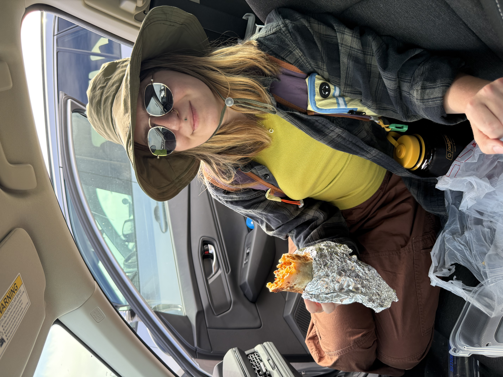

My personal travel diary.

Welcome to my travel blog! My name is Raven and I'm 29 years old. I created this site to share my favorite travel memories, as well as the places I hope to visit someday. I love to take photos with my film camera, look for bugs, and watch for wildlife!
From scenic overlooks to forested hiking trails, New River Gorge National Park in West Virginia offers plenty of opportunities to explore the outdoors. Read about this destination and add it to your own travel bucket list!
Read the Full Post